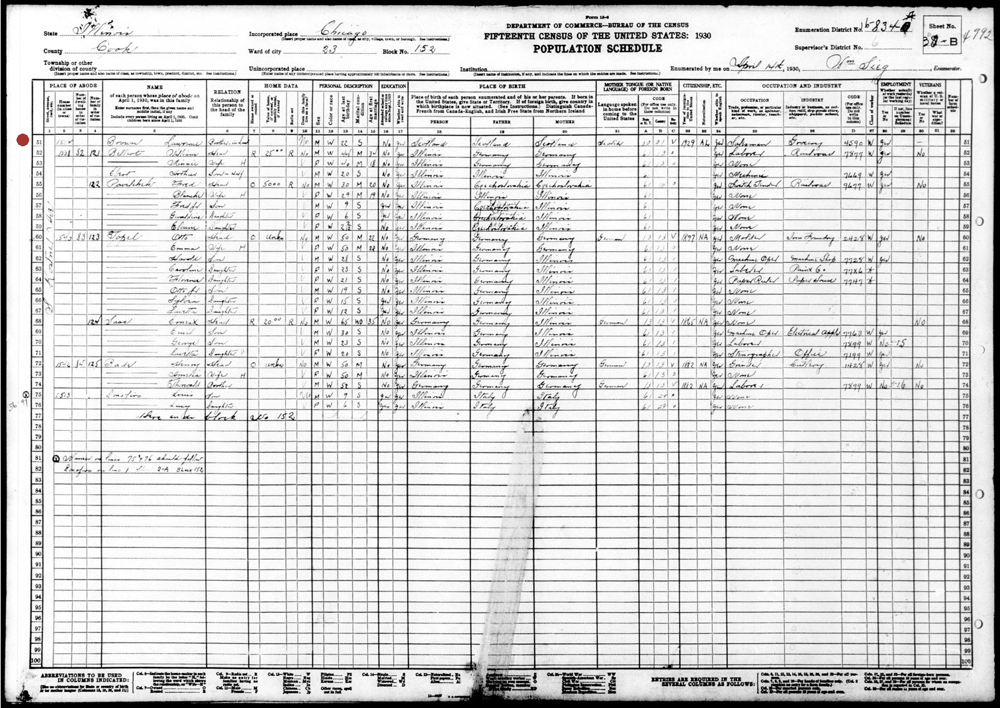

The Names He Carried · The Research
Doug Garceau, comp., “1930 U.S. census: 1534 South Kostner Avenue, Chicago, sheet 3B,” DOC-038, The Names He Carried: The Research (https://douggarceau.com/the-names-he-carried/archive/items/doc-038.html : accessed [date]); original: 1930 U.S. census, Cook County, Illinois, Ward 23, ED 16-834. NARA T626, roll 452.

This copy carries yellow highlighting or red outlining added for the book site. It is not on the original.
Tap an image to open it full size.
Everything as written, including misspellings. [?] marks an uncertain reading. Struck-through words are marked as struck through. Notes in square brackets describe the page and are not part of it.
[Printed, top] Form 15-6. DEPARTMENT OF COMMERCE—BUREAU OF THE CENSUS. FIFTEENTH CENSUS OF THE UNITED STATES: 1930. POPULATION SCHEDULE State: Illinois. County: Cook. Township or other division of county: [blank]. Incorporated place: Chicago. Ward of city: 23. Block No.: 152. Unincorporated place: [blank]. Institution: [blank] Enumeration District No. 16-834. Supervisor's District No. 6. Sheet No. 3[?]-B. [Stamped number, top right] 4992[?] Enumerated by me on April 14, 1930, Wm Sieg[?], Enumerator. [This copy is small. Line 51, the one for Lawrence Brown, is given in full.] [Columns] Place of abode: street, house number, dwelling number, family number | Name | Relation | Home data: owned or rented, value or rent, radio set, farm | Personal description: sex, color or race, age, marital condition, age at first marriage | Education: attended school, able to read and write | Place of birth: person, father, mother | Mother tongue | Code | Citizenship: year of immigration, naturalization, able to speak English | Occupation and industry: occupation, industry, code, class of worker | Employment: at work yesterday | Veterans 51 | 1534 | | | Brown, Lawrence | Brother-in-law | | | | | | M | W | 22 | S | | No | Yes | Scotland | Scotland | Scotland | Scottish[?] | [codes] | 1929 | Al | Yes | Salesman | Grocery | 4590[?] | W | Yes | — | 52–76 | [Other households on this sheet. The handwriting on this copy is too small to transcribe word for word, so these lines are not given here. The full page image is above.] 77 | [Written across the line] Here ends the Block No. 152 78–100 | [blank] [A two-line handwritten note at lines 81–82, too small to read on this copy] [Left margin, sideways, faint] [illegible] [Printed abbreviation key at the bottom of the form, too small to read on this copy]